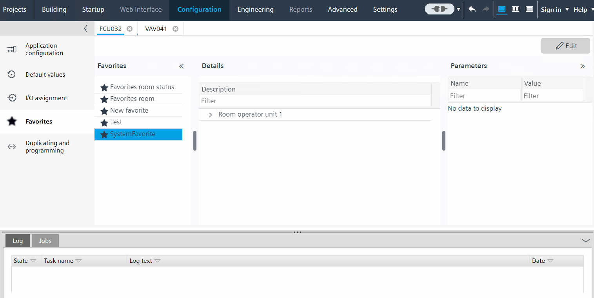
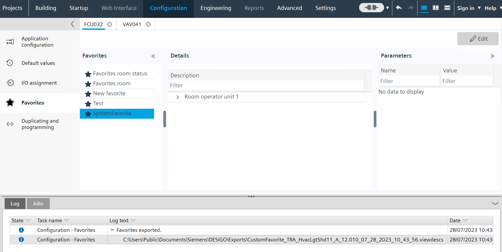

导出和导入收藏夹
您可以导出自定义收藏夹列表，然后在其他项目或 ABT Go 中导入和使用该列表。要在 ABT Go 中使用自定义收藏夹，请将该文件下载到您的移动设备上。下载的文件将自动显示在 ABT Go 中的自定义收藏夹中。有关详细信息，请参阅 ABT Go 在线帮助。
Export custom favorites 

- The Favorites task is not in Edit mode.
- Select the custom favorites list you want to export.
- Right-click and select Export.
- The custom favorites list (.viewdescs file) are exported to the default export directory.
您可以在中定义默认导出路径Project Manager > Settings > Export path.
Settings
Import custom favorites

- The Favorites task is in Edit mode.
- Click Edit.
- Click Import.
- Navigate to the file and click Open and click Apply.
- The custom favorites file (.viewdescs file) is imported and added to your custom favorites list.